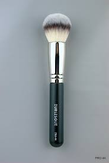
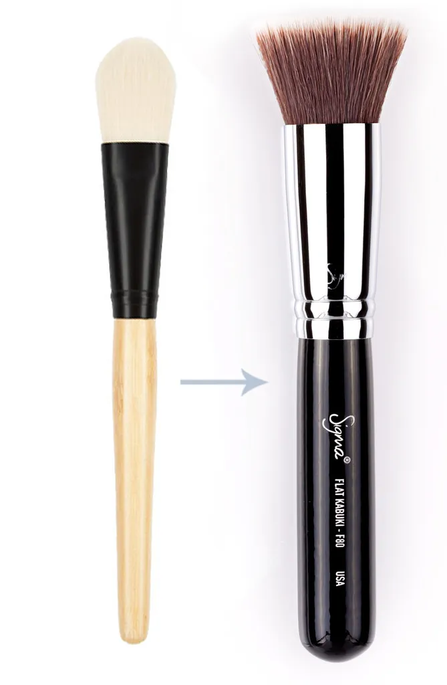

Nombre: Gisselle Gálvez Gálvez. COBAEZ Plantel Joaquin Amaro
Tecnologias de informacion y comunicacion.
Docente : Silvetre Ortega Solis.
Mi pagina web tratara sobre el huso y funcionamiento adecuados de cada una de las brochas para maquillaje , asi como especificamente el sitio en el que se deven utilizar para que y con que tipo de productos ya sean polvos o cremas.
¿Para qué se usa cada una?
(Haz Clic en la foto para ver el video)
Formas de clasificar las brochas
tipo de pelo natural y sintetico
corte de pelo redondo, biselado y plano
longitud del pelo corto y denso, largo y escaso
tamaño zonas del rostro
Tipos de brochas
Brocha de polvos para rostro
Para sellar el acabado de tu base y evitar los brillos
necesitaras aplicar unos polvos traslúcidos con una brocha
que abarque zonas amplias del rostro.Suele ser de cabeza
grande, redondeada, con pelolargo y suelto para manejar
comodamente productos en polvo.

Brochas para base liquida.
Sirve para distribuir la base liquida de maquillaje
aun que tambien la puedes utilizar para las cremas
sus cerdas no son abiertas sino compactas y cortas
hay dos formas , como se muestra en la imagen.

Brocha para contorno
Tambien llamada brocha para broncer ya que estos
productos los puedes sustituir uno por el otro
tine cierta forma angular obalada para enmarcar y
resaltar tus facciones.
Brocha para iluminador
Esta brocha es para el huso en los pomulos o areas grandes
a destacar o iluminar (con brillo).Su forma es como un abanico
porque su aplicacion es en diagonal y esta brocha solo es para
iluminador en polvo ya que hay formulas liquidas y para esas
es otro tipo de brocha mas